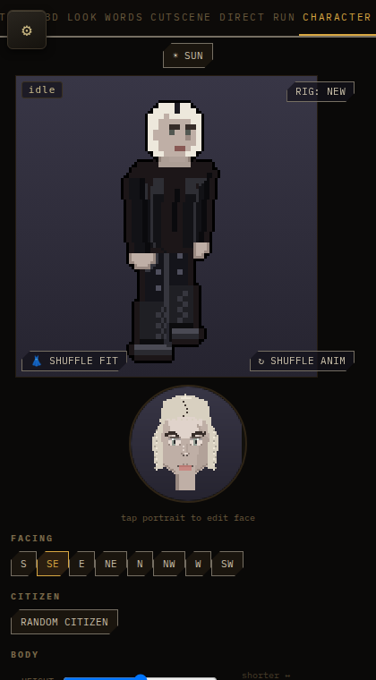
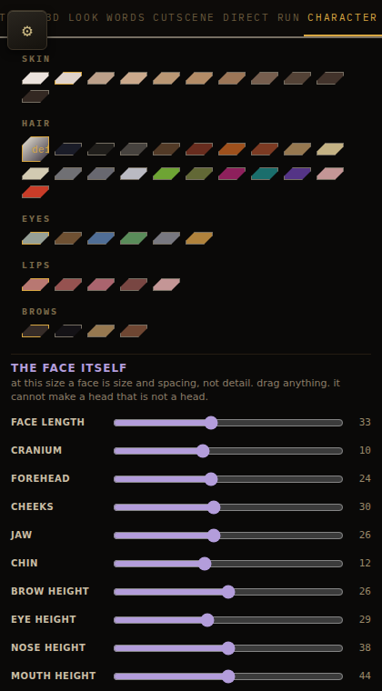
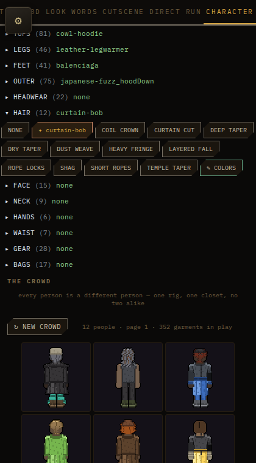

customization at the barber in the settlement: it costs a battery, and it opens the face maker and the haircut bank. the settlement screen and the building itself are run's; shown here is the cost, proven in node against the real purse, and the two editors it is for, really opening from a real tap.
| rich purse before | 3 batteries |
| rich purse after one visit | 2 batteries |
| broke purse, a visit tried | refused: CANNOT_AFFORD |
before, closed, then one real tap on the real portrait (the face editor, portrait's own code).


one real tap on this lane's own hair shelf -- a different panel, its own picture, not scrolled past.

not here, on purpose: the settlement screen and the barber building (run's),
and new hairstyles (rule 37i's other half, routed as its own next line so
neither the mechanism nor the content gets rushed).